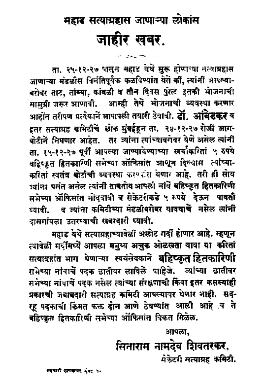

Mahad Satyagraha was a satyagraha led by B. R. Ambedkar on 20 March 1927 to allow untouchables to use water in a public tank in Mahad (currently in Raigad district), Maharashtra, India.The day (20 March) observed as Social Empowerment day in India.
By the Indian caste system, untouchables (Dalits) were segregated from the caste Hindus. They were banned from using water bodies and roads which were used by caste Hindus. On August 1923, Bombay Legislative Council passed a resolution that people from the depressed classes should be allowed to use places which were built and maintained by the Government.In January 1924, Mahad which was part of the Bombay Province passed the resolution in its municipal council to enforce the act. But it was failed to implement because of the protest from the caste Hindus.
| Bronze sculpture depicting Mahad movement by B R Ambedkar |
Satyagraha :
In 1927, Ambedkar decided to launch a satyagraha (nonviolent resistance) to assert their rights to use water in the public places. His Bahishkrit Hitakarini Sabha arranged a conference on 19-20 March 1927 in Mahad, in which more than thousand people were gathered. At the end of the conference, they marched to the Chavdar Tale (tasty water lake), the main tank of the town and they drank water from the tank.
|

|